Jesteśmy prawdziwym zespołem! Zespół znaczy ludzie, którzy wierzą w to, co robią i wiedzą, na jak ważną misję wyruszyli. Dlatego wspieramy się nawzajem i inspirujemy, by codziennie, z uśmiechem, życzliwością, z twórczym podekscytowaniem w głowie oraz spokojem w sercu, powitać Ciebie oraz Twoje Dziecko w progach Naszego Przedszkola. I tak co dnia, dzielimy się z Wami naszym sercem, zapałem, naszym potencjałem, ale ponad wszystko jesteśmy autentyczne w tym, co robimy. Poznaj nas, daj się ugościć w naszych progach i dziel z nami dobro, które razem wypracujemy.
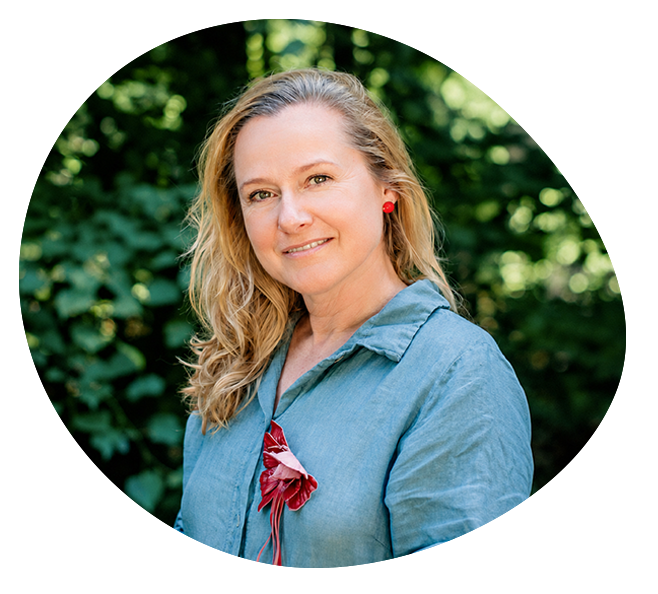
Jestem założycielką Przedszkola Blisko Dziecka i Natury – miejsca, które powstało z moich marzeń o pięknym dzieciństwie i uważnej edukacji najmłodszych dzieci. Podstawowe założenia placówki oddają to, co uważam za najważniejsze, czyli: pełną szacunku i zrozumienia relację dorosłych z dziećmi i ich rodzicami, a także kontakt z naturą i sztuką. Przedszkole to moje ukochane miejsce na Ziemi.
Z wykształcenia jestem pedagożką, nauczycielką edukacji przedszkolnej, arteterapeutką, trenerką Minimediacji wg Porozumienia Bez Przemocy (NVC) oraz współautorką programów rozwojowych dla dzieci: „Rozwojowe Wzgórze” i „Arteterapia w przedszkolu”. Praca z dziećmi jest moją pasją niezmiennie od wielu lat.
W kontakcie z dziećmi uwielbiam ich autentyczność, spontaniczność i energię. Szczególne znaczenie ma dla mnie budowanie prawdziwej relacji z dzieckiem, dostrzeganie jego indywidualności, słyszenie potrzeb i odpowiadanie na nie. Bliska jest mi pedagogika Marii Montessori, ponieważ wierzę, że dzieci same chcą się uczyć, poznawać świat, a zadaniem dorosłego jest stworzyć im do tego odpowiednią przestrzeń i warunki. Marzę o tworzeniu miejsca, w którym dzieci znajdą ciepło, zrozumienie i bezpieczeństwo; przedszkola, do którego dzieci przychodzą z radością, a rodzice z pełnym zaufaniem. Moją misją jest też wspieranie kobiet w rozwoju zawodowym i osobistym, troska o ich dobrostan i jakość życia.
W wolnym czasie nadal zachwycam się dziećmi – tym razem własnymi :) Poza tym łapię balans w naturze i w ciszy.
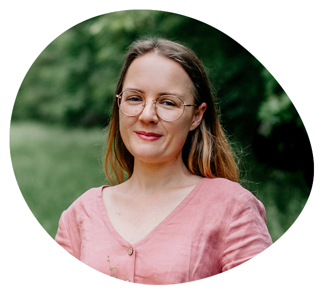
Jestem nauczycielką wychowania przedszkolnego, terapeutką integracji sensorycznej, trenerką Sensoplastyki, technikiem weterynarii. W przedszkolu pełnię rolę wychowawcy leśnej grupy, odpowiadam także za komunikację i media społecznościowe.
W pracy z dziećmi ważne jest dla mnie budowanie szczerej relacji opartej na wzajemnym szacunku, zaufaniu i dostrzeganiu dziecięcych potrzeb. Na co dzień przenoszę edukację w naturę; wierzę, że kontakt z przyrodą i zaspokojenie naturalnej potrzeby eksploracji są niezbędne dla harmonijnego rozwoju dziecka, a kształtowanie ciekawości świata, wrażliwości oraz radości odkrywania w bezpiecznej atmosferze stanowi fundament skutecznej nauki.
Swoimi leśnymi doświadczeniami oraz przekonaniem o tym, jak ważny jest kontakt z naturą i kształtowanie uważności, dzielę się w szkoleniu „Leśne zmysły – edukacja przyrodnicza w przedszkolu” oraz w artykułach pisanych dla czasopism „Bliżej Przedszkola” i „Dzieci”.
Prywatnie jestem miłośniczką zwierząt, książek i kontaktu z naturą; dużo czasu spędzam na leśnych wędrówkach z moim ukochanym psem. Lubię dobrą kawę, uważne rozmowy, kontakt z kulturą oraz niespieszne chwile, które sprzyjają refleksji.
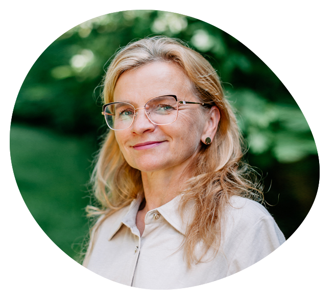
Jestem pomocą nauczyciela w grupie maluszków. Pracując z dziećmi w wieku 2,5–3,5 lat, które rozpoczynają swoją przedszkolną przygodę, widzę, jak dużym wyzwaniem potrafi być dla nich etap adaptacji. Staram się więc z cierpliwością, empatią i gotowością do pomocy, a także we współpracy z nauczycielem i rodzicami, towarzyszyć dzieciom w tym wymagającym czasie.
Chętnie pomagam w codziennych czynnościach takich jak ubieranie się, wyjścia na spacery czy spożywanie posiłków. Towarzyszę dzieciom podczas popołudniowego odpoczynku oraz wspólnych zajęć i zabaw z innymi; jestem blisko nich przez cały dzień. Czuję dużą satysfakcję widząc, jak stopniowo zwiększą się dziecięca pewność siebie i radość.
W wolnym czasie lubię czytać książki, grać w planszówki z bliskimi osobami oraz spędzać czas na spacerach i przytulaniu z moim ukochanym psem.
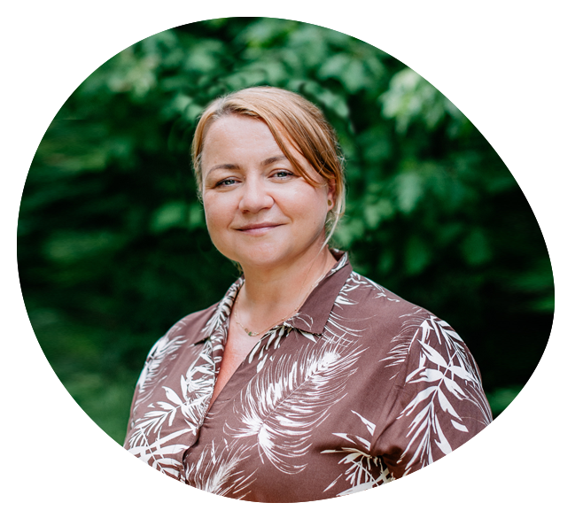
Pracuję na stanowisku pomocy nauczyciela. Praca z dziećmi daje mi ogromną satysfakcję i każdego dnia przypomina, jak wyjątkowy jest świat najmłodszych. Uwielbiam obserwować ich rozwój, naturalną ciekawość oraz indywidualność, z jaką odkrywają otaczającą rzeczywistość.
Praca w grupie integracyjnej z elementami pedagogiki Montessori jest dla mnie cennym doświadczeniem. Uczy mnie jeszcze większej uważności, cierpliwości i dostrzegania indywidualnych potrzeb dzieci. Wierzę, że każde z nich zasługuje na akceptację, wsparcie i możliwość rozwoju we własnym rytmie.
W codziennych relacjach z dziećmi stawiam na życzliwość, uważność i wzajemny szacunek. Wiem też, jak wiele dobrego przynosi poczucie humoru – pomaga budować bliskość i daje dzieciom poczucie swobody. Dlatego często wspólnie się śmiejemy, ale też rozmawiamy na poważne tematy.
Największą radość daje mi świadomość, że dzieci czują się wysłuchane, bezpieczne i zauważone. Nawet zwykły dzień spędzony z dziećmi jest dla mnie wielką inspiracją i utwierdza mnie w przekonaniu, że ta praca ma wyjątkowy sens.
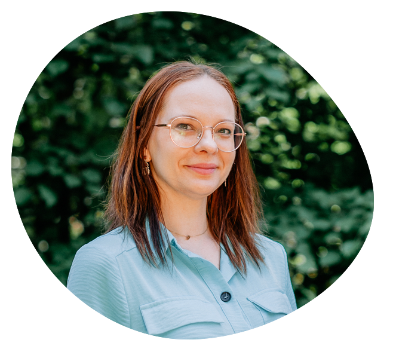
Jestem pedagogiem specjalnym oraz nauczycielem współorganizującym proces kształcenia. Moim powołaniem jest wspieranie dzieci – szczególnie dzieci ze specjalnymi potrzebami edukacyjnymi – w ich indywidualnym rozwoju.
W pracy kieruję się cierpliwością, empatią i przekonaniem, że każde dziecko ma wyjątkowy potencjał. Bliska jest mi idea wychowania w kontakcie z naturą, który sprzyja harmonijnemu rozwojowi, budowaniu samodzielności oraz umożliwia odkrywanie świata wszystkimi zmysłami.
Jestem autorką e-booka pt. „Burza w środku – o emocjach, których nie widać”, który towarzyszy dzieciom i nastolatkom w drodze do odkrywania własnych emocji, a także pomaga rodzicom i nauczycielom lepiej rozumieć młodych ludzi.
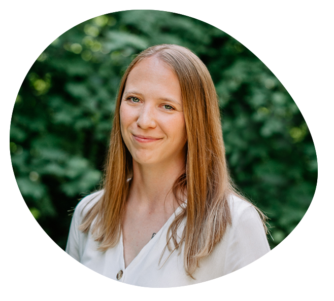
Jestem pedagogiem, filologiem i lektorem języka polskiego jako obcego. Od 7 lat pracuję jako nauczyciel wychowania przedszkolnego. Swoją przygodę z pracą z dziećmi rozpoczynałam jako pedagog w żłobku, następnie jako nauczyciel w przedszkolu międzynarodowym oraz nauczyciel języka angielskiego. W trakcie rozwoju zawodowego powoli odkrywałam, jakim nauczycielem chciałabym być i czym chciałabym kierować się w swojej pracy. Widzę, jak wielki potencjał drzemie w małych istotach, dlatego chciałabym umożliwić im jak najlepszą drogę do pełnego samorozwoju.
Odkryłam, że podczas towarzyszenia dzieciom w tym procesie chciałabym być wrażliwa na ich potrzeby; nauczyłam się, że empatia i bliska relacja z dziećmi to klucz do ich harmonijnego rozwoju i poczucia bezpieczeństwa. Dlatego rozpoczęłam szkolenia z komunikacji NVC oraz z rodzicielstwa bliskości – idee tych założeń towarzyszą mi obecnie jako nauczycielce, ale także jako mamie.
Najważniejsze w mojej pracy jest dla mnie to, żeby dzieci czuły się bezpieczne i wysłuchane; żeby miały poczucie, że są ważne. W przerwie od bycia nauczycielką i mamą jestem ogromną fanką siatkówki, a wolny czas lubię spędzać, wędrując po górach.
Pracuję na stanowisku pomocy nauczyciela. Ta rola jest dla mnie czymś znacznie więcej niż tylko pracą, ponieważ wiem, że każdego dnia współtworzę ważną część dziecięcego świata. Moim celem jest sprawić, aby był on pełen życzliwości, zrozumienia i poczucia bezpieczeństwa.
W swojej pracy kieruję się cierpliwością oraz uważnością na potrzeby każdego dziecka. Jako osoba kochająca muzykę chętnie wprowadzam do naszej codzienności śpiew oraz wspólne tworzenie piosenek. Wierzę, że muzyka i kreatywna zabawa pomagają dzieciom wyrażać emocje, rozwijać wyobraźnię i budować pewność siebie.
Największą radość sprawiają mi uśmiechy dzieci oraz ich zaangażowanie we wspólne zabawy i muzyczne aktywności. To właśnie ich szczerość, ciekawość świata i codzienne postępy sprawiają, że każdego dnia z radością wykonuję swoją pracę.
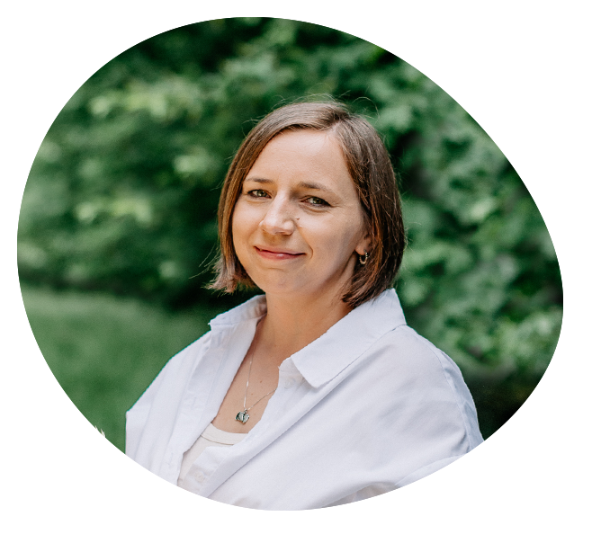
Jestem psycholożką, diagnostką zaburzeń neurorozwojowych oraz terapeutką dzieci i młodzieży. Każdego dnia staram się być dla dzieci uważnym i wspierającym towarzyszem – kimś, kto wysłucha, zrozumie i pomoże przeżyć nawet te trudniejsze emocje.
W przedszkolu prowadzę zajęcia rozwijające kompetencje emocjonalno-społeczne, wspieram rodziców i nauczycieli oraz realizuję mój autorski program „Przygody z TUS-kiem, czyli Trening Umiejętności Społecznych dla przedszkolaków”. W razie potrzeby prowadzę również interwencje psychologiczne, podczas których jako najwyższą wartość stawiam zawsze dobro dziecka. Wierzę, że dzieci najlepiej rozwijają się wtedy, gdy czują się bezpieczne, akceptowane i mogą po prostu być sobą.
Uwielbiam pracę z dziećmi ich szczerość, autentyczność i wyjątkowe spojrzenie na świat. Ogromną satysfakcję daje mi obserwowanie, jak dzieci nabierają odwagi, lepiej rozumieją swoje emocje i z każdym dniem coraz mocniej wierzą w siebie.
Po pracy najchętniej zakładam rolki albo sięgam po książkę. Lubię też rozwijać się zawodowo i nieustannie poszerzać swoją wiedzę, bo wierzę, że dzięki temu mogę jeszcze lepiej wspierać dzieci i ich rodziny.
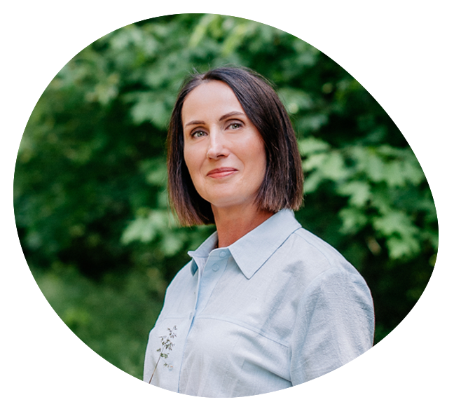
Jestem nauczycielem Montessori, na co dzień wspieram pracę grupy jako pomoc nauczyciela. Praca z dziećmi to moja pasja i źródło radości. Szczególnie bliska jest mi pedagogika Montessori, ponieważ opiera się na głębokim szacunku do dziecka i jego indywidualnych potrzeb. Wierzę, że każde dziecko nosi w sobie ogromny potencjał, a rolą nauczyciela jest stworzenie mu przestrzeni do swobodnego rozwoju oraz towarzyszenie jako wspierający przewodnik.
Wybrałam ten zawód, ponieważ pragnęłam wykonywać pracę, która ma sens i pozwala każdego dnia wnosić dobro w życie innych ludzi. Stale rozwijam swoje kompetencje uczestnicząc w kursach i szkoleniach pedagogicznych. W wolnym czasie dbam o aktywność fizyczną, podróżuję i czytam kryminały.
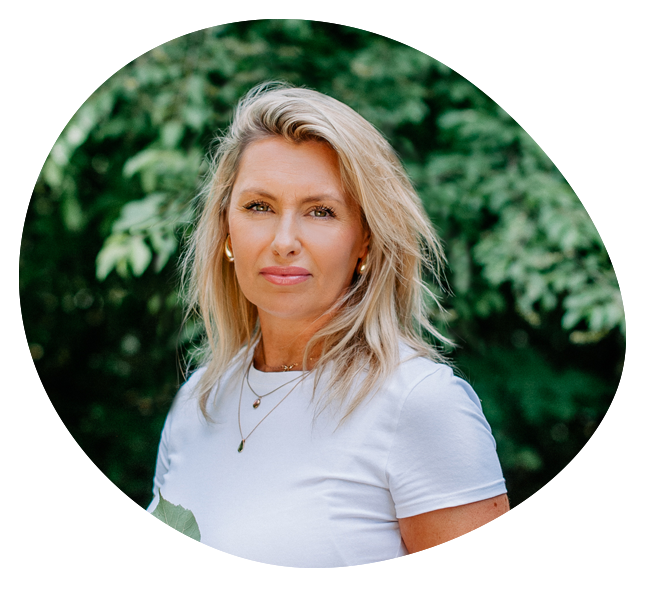
Jestem pedagogiem specjalnym, nauczycielem współorganizującym proces kształcenia oraz oligofrenopedagogiem. Pracuję w grupie integracyjnej. W swojej pracy wspieram dzieci w ich indywidualnym rozwoju, dbając o to, aby każde z nich czuło się bezpieczne, akceptowane i miało możliwość rozwijania swoich umiejętności we własnym tempie. Współpracuję z nauczycielami, specjalistami oraz rodzicami, aby jak najlepiej odpowiadać na potrzeby dzieci.
W swojej pracy najbardziej lubię to, że każdy dzień przynosi nowe doświadczenia i małe sukcesy, które możemy wspólnie celebrować. Ogromną satysfakcję daje mi obserwowanie radości, z jaką dzieci odkrywają świat, dostrzeganie ich postępów oraz towarzyszenie im w budowaniu pewności siebie. Największą motywacją jest dla mnie dziecięcy uśmiech, zaufanie i codzienne osiągnięcia.
Wybrałam ten zawód, ponieważ chciałam pomagać innym, co realizuję poprzez wspieranie dzieci w pokonywaniu trudności oraz rozwijaniu ich mocnych stron. Wierzę, że każde dziecko ma ogromny potencjał, który warto odkryć i pielęgnować.
Lubię czytać książki, spacerować, aktywnie spędzać czas na świeżym powietrzu oraz rozwijać swoje umiejętności poprzez udział w szkoleniach i kursach. Cenię czas spędzany z rodziną i bliskimi. W wolnych chwilach oglądam mecze piłki nożnej.
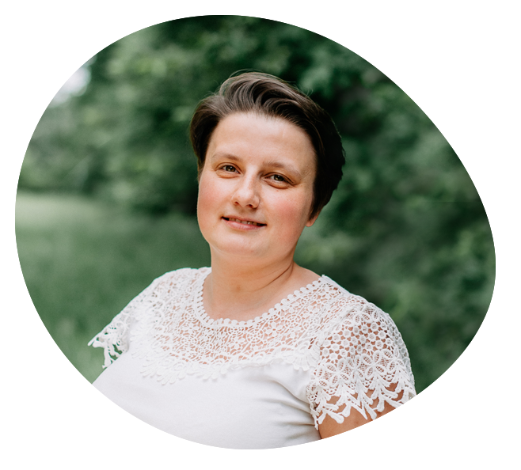
Cieszę się, że mogę wspierać działalność przedszkola jako sekretarka. Dokładam wszelkich starań, żeby „papiery się zgadzały”, dzięki czemu każdy dzień w placówce może przebiegać w sposób sprawny i zorganizowany. Na co dzień dbam o organizację pracy sekretariatu, przygotowuję dokumentację i zestawienia oraz koordynuję zamówienia. Gdy jest taka potrzeba, chętnie angażuję się w codzienne życie przedszkola – staram się być wsparciem dla całego zespołu.
Lubię kontakt z ludźmi i z radością witam każdego, kto przekracza próg naszego przedszkola. Zależy mi, żeby zarówno dzieci, jak i rodzice czuli się tu mile widziani i mogli liczyć na życzliwość oraz pomoc.
Uwielbiam czytać książki, spędzać czas na świeżym powietrzu i jeździć na rowerze; cenię sobie wiejskie życie. Mam męża i dwójkę dzieci w wieku szkolnym.
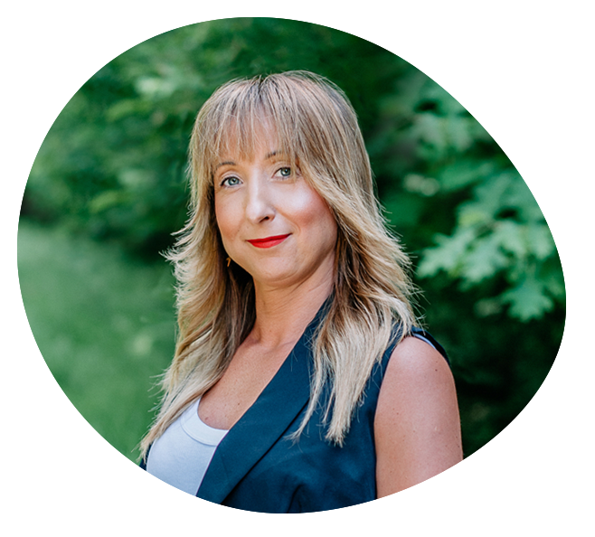
Praca jako wychowawca przedszkola daje mi ogromną radość i poczucie sensu. W codziennych relacjach z dziećmi stawiam na empatię, uważne słuchanie i wspieranie ich w odkrywaniu świata. Priorytetem jest dla mnie ich bezpieczeństwo oraz wszechstronny rozwój.
Nieustannie podnoszę swoje kwalifikacje. Po ukończeniu studiów z zakresu edukacji przedszkolnej i wczesnoszkolnej, psychopedagogiki oraz pracy socjalnej, aktualnie zgłębiam tematykę diagnozy, terapii i rewalidacji dzieci.
Prywatnie regeneruję siły w ruchu albo przy dobrej literaturze. Moją miłością są kryminały – fascynuje mnie w nich dokładnie to samo, co w psychologii: odkrywanie tajemnic ludzkich zachowań i próba wnikliwego zrozumienia drugiego człowieka.
Od pięciu lat umuzykalniam dzieci i młodzież, prowadząc zajęcia w przedszkolach, żłobkach i szkole muzycznej. W swojej pracy łączę rytmikę, teorię uczenia się muzyki E.E. Gordona oraz elementy Pomelody.
Zależy mi na tym, żeby każde dziecko miało dostęp do wartościowej muzyki i odkrywało jej różnorodność. Podczas zajęć poznajemy utwory muzyki klasycznej, rozrywkowej i ludowej; wspólnie śpiewamy, gramy na instrumentach, a także odkrywamy możliwości naszych najbardziej naturalnych instrumentów – głosu i ciała.
Dzięki różnorodnym aktywnościom opartym na zabawie rozwijamy kreatywność, improwizację i koordynację ruchową, a także koncentrację uwagi i uważność.
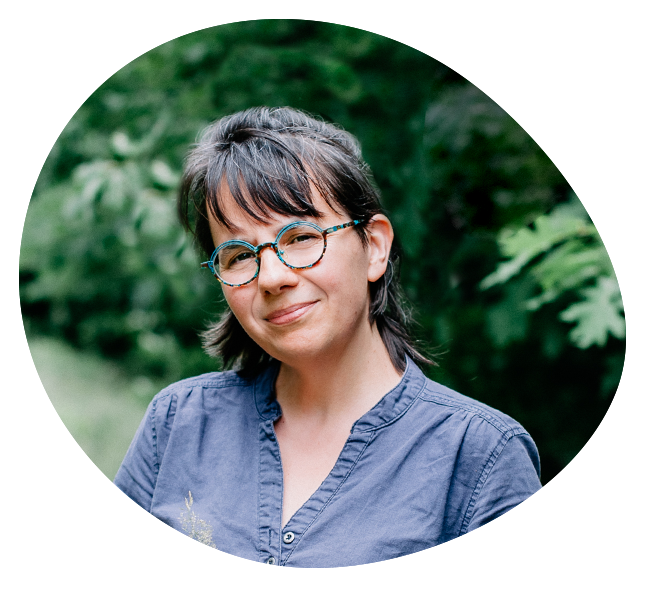
W swojej pracy z dziećmi stawiam na wolność, swobodę wyrazu i autentyczny przepływ. Na tej podstawie tworzę zajęcia teatralne, arteterapię, spotkania z bajką oraz działania muzyczne, w których dzieci mogą podążać za swoją wyobraźnią i własnym sposobem widzenia świata.
Opowiadam bajki, tworząc do nich muzykę na żywo – wykorzystując flety, kalimbę, ukulele, bęben oceaniczny i inne naturalne instrumenty. Uwielbiam podążać za dziećmi, za ich pomysłami, ciekawością i niezwykłą świeżością spojrzenia. To właśnie tę świeżość widzenia świata, którą czerpię od dzieci, zamykam w słowach i dźwiękach moich autorskich piosenek, które piszę dla najmłodszych.
Od wielu lat pracuję z dziećmi poprzez teatr, muzykę i sztukę. Jestem trenerką rozwoju osobistego, arteterapeutką i animatorką kultury. Prowadziłam zajęcia teatralne, muzyczne i twórcze w przedszkolach, szkołach i innych miejscach wspierających rozwój dzieci.
Wierzę, że dziecko ma w sobie naturalny potencjał tworzenia, a najpiękniejsze rzeczy pojawiają się wtedy, gdy damy mu przestrzeń, uważność i możliwość bycia sobą.
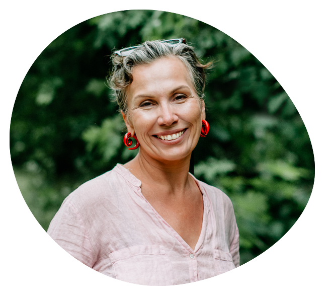
Od kilkunastu lat z radością prowadzę zajęcia jogi i relaksacji dla przedszkolaków, na które z otwartym sercem przyjmuję każde dziecko – dokładnie takim, jakie jest, ze wszystkimi jego kolorami i indywidualnością.
W swojej pracy stawiam na cierpliwość, serdeczność i kreatywne, holistyczne podejście, w którym świadomy ruch, oddech i mindfulness spotykają się z elementami arteterapii oraz radosną, bajkową zabawą. Na naszej magicznej macie tworzymy przestrzeń pełną akceptacji i ciepła; nie ma tu miejsca na oceny i presję, jest za to zachęta do bycia sobą, wyrażania emocji oraz do wspólnej, beztroskiej przygody.
Każdego dnia pomagam dzieciom budować świadomość ciała i oddechu, radzić sobie z emocjami w prosty, naturalny sposób oraz odkrywać radość z ruchu, kreatywnej ekspresji i bycia razem. Wspieram w rozwijaniu pewności siebie i wyobraźni, bo na macie każdy może być tym, kim chce – od dzielnego smoka po leniwego misia, który właśnie maluje swoje uczucia. Największą radość daje mi obserwowanie, jak oczy dziecka rozświetlają się uśmiechem i wewnętrznym spokojem podczas wspólnych praktyk, gdzie joga i arteterapia przeplatają się z dziecięcą wyobraźnią i odrobiną magii.